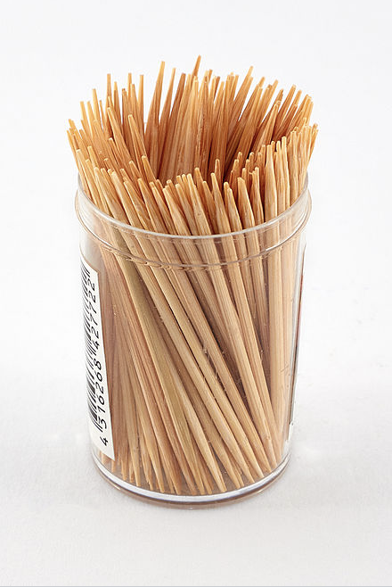
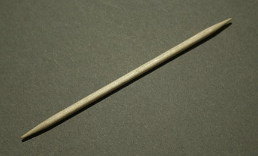

From Wikipedia, the free encyclopedia
A toothpick is a small thin stick of wood, plastic, bamboo, metal, bone or other substance with at least one and sometimes two pointed ends to insert between teeth to remove detritus, usually after a meal. Toothpicks are also used for festive occasions to hold or spear small appetizers (like cheese cubes or olives) or as a cocktail stick, and can be decorated with plastic frills or small paper umbrellas or flags.[1]
Known in all cultures, the toothpick is the oldest instrument for dental cleaning. Hominin remains from Dmanisi, Georgia, dated to about 1.8 million years ago, bear lesions indicating the repeated use of a “toothpick”.[2][3] Toothpicks made of bronze have been found as burial objects in prehistoric graves in Northern Italy and in the East Alps. In 1986, researchers in Florida discovered the 7500-year-old remains of ancient Native Americans and discovered small grooves between many of the molar teeth.[4] One of the researchers, Justin Martin of Concordia University Wisconsin, said, "The enamel on teeth is quite tough, so they must have used the probes quite rigorously to make the grooves."[4]
There are delicate, artistic examples made of silver in antiquity, as well as from mastic wood with the Romans.
Plastic interdental piks designed to prevent gingivitis, and wooden flat toothpicks. In the 17th century, toothpicks were luxury objects and like jewelry, were artfully stylized using precious metal and set with expensive stones.
The first toothpick-manufacturing machine was developed in 1869, by Marc Signorello. Another was patented in 1872, by Silas Noble and J. P. Cooley.[5]
Wooden toothpicks are cut from birch wood. Logs are first spiral cut into thin sheets, which are then cut, chopped, milled and bleached (to lighten) into the individual toothpicks.[6] Plastic toothpicks, also called dental pics, are still made in America in Georgia, by Armond's Manufacturing. The Mayo Clinic recommends using a dental pic in lieu of a wooden toothpick to clean one's teeth, as they clean more effectively and one does not risk injuring the gums.[citation needed] Nowadays other means of dental hygiene are preferred such as dental floss, toothbrushes, and oral irrigators.
A bamboo toothpick
Dentists generally prefer floss to picks because of possible damages to oral health.[7]